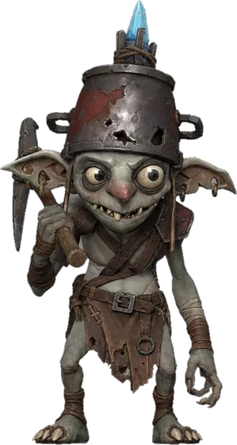
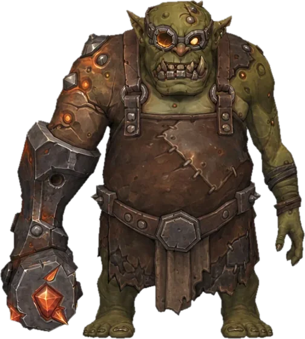
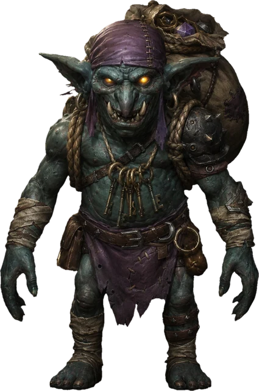
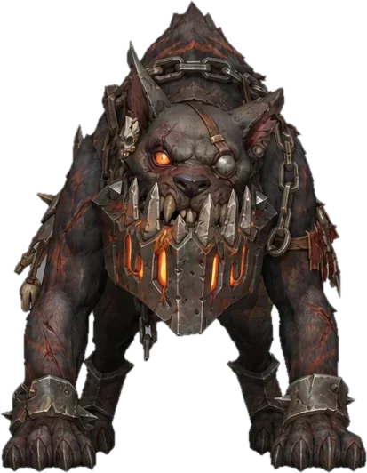
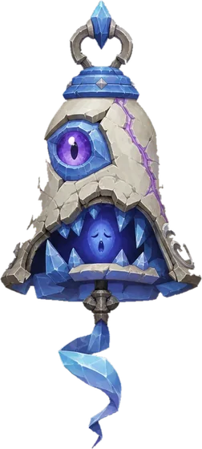
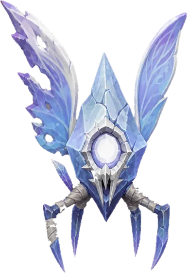
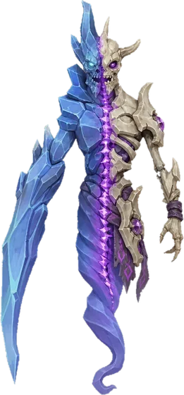
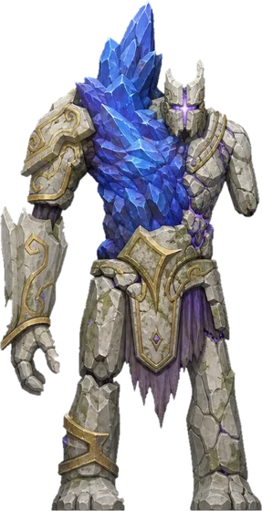

Bestiário
O que o cristal faz nascer
197 criaturas de Ermândia, do Vale das Flores-Sino às profundezas do nível 150. O jogo lança até o nível 60; o resto chega nas próximas expansões. Toque numa criatura para abrir a ficha: status, espectro elemental e o que ela deixa cair.
- Todas as regiões197
- Vale das Flores-Sinonv 1-107
- Charneca dos Túmulosnv 1-54
- Socalcos da Pedreiranv 1-54
- Campo das Lanças Velhasnv 6-83
- Bosque do Veio-Raiznv 6-83
- Colmeias Saqueadasnv 7-71
- Ninho das Lançasnv 10-101
- Toca do Presa-Velhanv 10-101
- Bosque das Bétulas-Cinzanv 11-166
- Ruínas Azuladasnv 11-207
- Ribeirão de Cobrenv 11-166
- Coxilha do Capim-Ventonv 11-166
- Subsolo Azuladonv 19-191
- Charco dos Juncosnv 21-277
- Colinas dos Moinhos Quebradosnv 26-337
- Cripta Afogadanv 30-388
- Mata dos Espinhosnv 34-417
- Tocas dos Saqueadoresnv 38-458
- Sopé das Cinzasnv 46-546
- Minas do Veio Ferrugemnv 50-598
- Desfiladeiro Uivantenv 55-646
- Cicatriz de Cristalnv 60-696
- Caldeira das Salamandrasnv 66-757
- Forja dos Esquecidosnv 72-807
- Costa dos Naufrágiosnv 81-887
- Picos da Tormentanv 85-936
- Catedral Ocanv 88-968
- Deserto de Vidronv 93-1007
- Orla do Véunv 101-1116
- Floresta que Choranv 108-1186
- Tundra dos Ossosnv 115-1246
- Fenda Abissalnv 122-1326
- Berço dos Primeiros Dragõesnv 129-1396
- Céu Partidonv 136-1456
- Coração de Cristalnv 143-1506
197criaturas177com arte final


 Chefe
ChefeCharneca dos Túmulos
Níveis 1-5 · 4 criaturas


Socalcos da Pedreira
Níveis 1-5 · 4 criaturas

Campo das Lanças Velhas
Níveis 6-8 · 3 criaturas
Bosque do Veio-Raiz
Níveis 6-8 · 3 criaturas


Colmeias Saqueadas
Níveis 7 · 1 criatura
Ninho das Lanças
Níveis 10 · 1 criatura
 Chefe
ChefeToca do Presa-Velha
Níveis 10 · 1 criatura
Bosque das Bétulas-Cinza
Níveis 11-16 · 6 criaturas


 Chefe
ChefeRuínas Azuladas
Níveis 11-20 · 7 criaturas


 Chefe
ChefeRibeirão de Cobre
Níveis 11-16 · 6 criaturas


 Chefe
ChefeCoxilha do Capim-Vento
Níveis 11-16 · 6 criaturas
Subsolo Azulado
Níveis 19 · 1 criatura
 Chefe
Chefe


Colinas dos Moinhos Quebrados
Níveis 26-33 · 7 criaturas


 Chefe
ChefeCripta Afogada
Níveis 30-38 · 8 criaturas


 Chefe
Chefe Chefe
Chefe


Tocas dos Saqueadores
Níveis 38-45 · 8 criaturas

Goblin CavadorNível 38Neutro Goblin FundibulárioNível 39Neutro
Goblin FundibulárioNível 39Neutro Cão de GuerraNível 40Brasa
Cão de GuerraNível 40Brasa
Goblin ForjadorNível 41Brasa
Goblin GatunoNível 42Neutro Goblin Quebra-MuroNível 43Neutro
Goblin Quebra-MuroNível 43Neutro
ChefeMandíbula-de-FerroNível 44Brasa ChefeFerrabruta, Grão-Chefe GoblinNível 45Brasa
ChefeFerrabruta, Grão-Chefe GoblinNível 45Brasa


 Chefe
ChefeMinas do Veio Ferrugem
Níveis 50-59 · 8 criaturas


Desfiladeiro Uivante
Níveis 55-64 · 6 criaturas


Cicatriz de Cristal
Níveis 60-69 · 6 criaturas

Eco-EstilhaçoNível 60Cristal
Além do nível 60Cisco-LumeNível 61Cristal
Além do nível 60Espírito PartidoNível 62Cristal
Além do nível 60Sentinela de VeioNível 65CristalAlém do nível 60Eco ManchadoNível 66CrepúsculoChefeAlém do nível 60Ecoante, o Coro de CristalNível 69CristalCaldeira das Salamandras
Níveis 66-75 · 7 criaturas
Em produçãoarte sendo refeita
Forja dos Esquecidos
Níveis 72-80 · 7 criaturas
 Além do nível 60Ferreiro CinzentoNível 72RochaAlém do nível 60Mão da ForjaNível 73RochaAlém do nível 60Assombro do FoleNível 74Brasa
Além do nível 60Ferreiro CinzentoNível 72RochaAlém do nível 60Mão da ForjaNível 73RochaAlém do nível 60Assombro do FoleNível 74Brasa Além do nível 60Golem-BigornaNível 76RochaAlém do nível 60Mestre CinzentoNível 77RochaChefeAlém do nível 60O Aprendiz AcorrentadoNível 78RochaChefeAlém do nível 60O Primeiro FerreiroNível 80Rocha
Além do nível 60Golem-BigornaNível 76RochaAlém do nível 60Mestre CinzentoNível 77RochaChefeAlém do nível 60O Aprendiz AcorrentadoNível 78RochaChefeAlém do nível 60O Primeiro FerreiroNível 80RochaCosta dos Naufrágios
Níveis 81-88 · 7 criaturas
Em produçãoarte sendo refeita
Picos da Tormenta
Níveis 85-93 · 6 criaturas
Em produçãoarte sendo refeita
Catedral Oca
Níveis 88-96 · 8 criaturas
Em produçãoarte sendo refeita
Deserto de Vidro
Níveis 93-100 · 7 criaturas
Em produçãoarte sendo refeita
Orla do Véu
Níveis 101-111 · 6 criaturas
Em produçãoarte sendo refeita
Floresta que Chora
Níveis 108-118 · 6 criaturas
Em produçãoarte sendo refeita
Tundra dos Ossos
Níveis 115-124 · 6 criaturas
 ChefeAlém do nível 60Jarl SepultoNível 124Maré
ChefeAlém do nível 60Jarl SepultoNível 124MaréEm produçãoarte sendo refeita
Fenda Abissal
Níveis 122-132 · 6 criaturas
Berço dos Primeiros Dragões
Níveis 129-139 · 6 criaturas
Em produçãoarte sendo refeita
Céu Partido
Níveis 136-145 · 6 criaturas
Coração de Cristal
Níveis 143-150 · 6 criaturas
Em produçãoarte sendo refeita